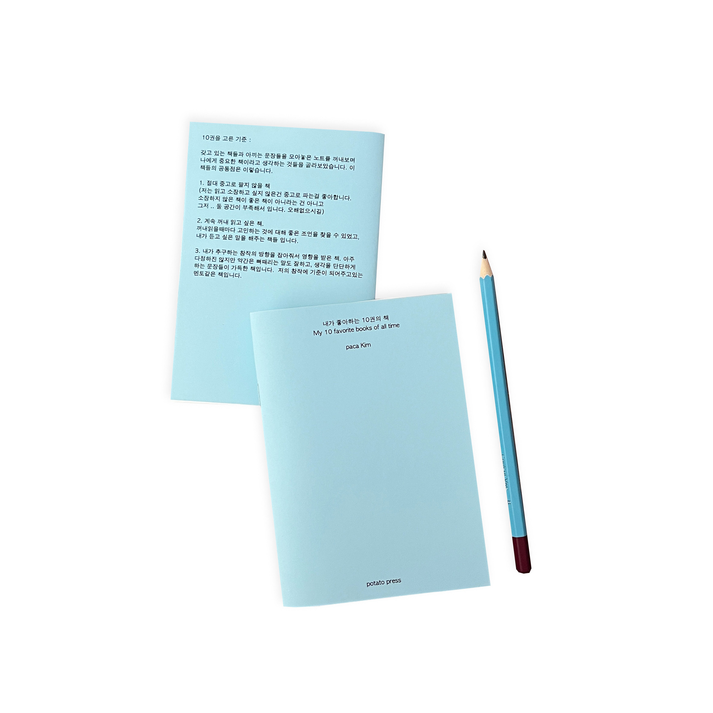
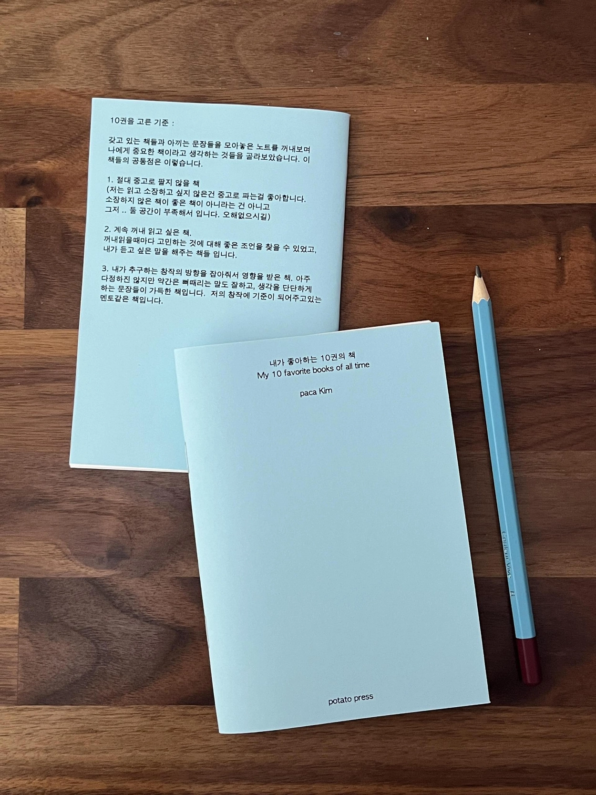
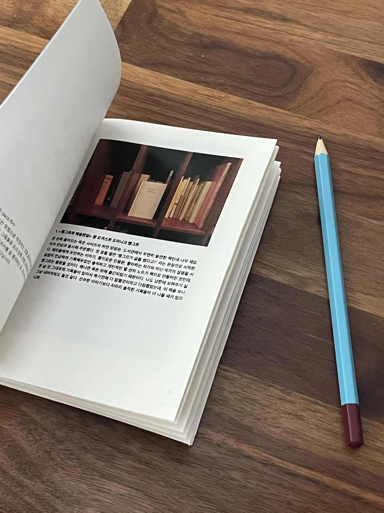
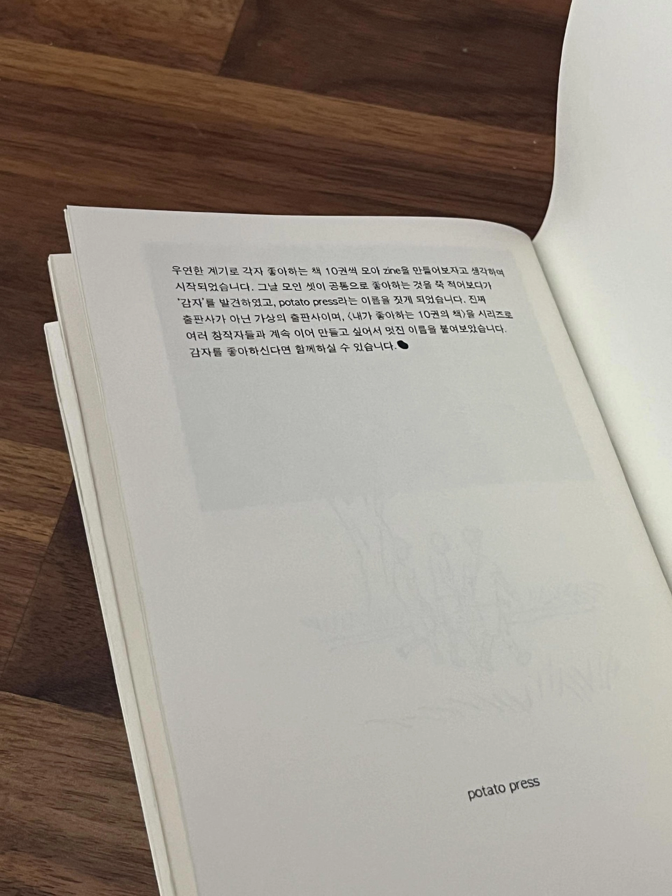
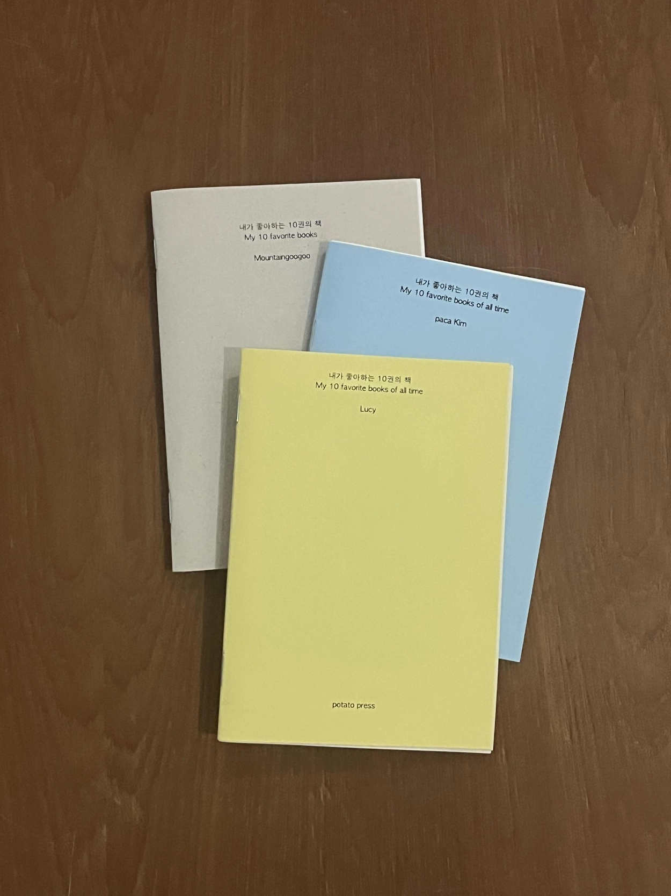
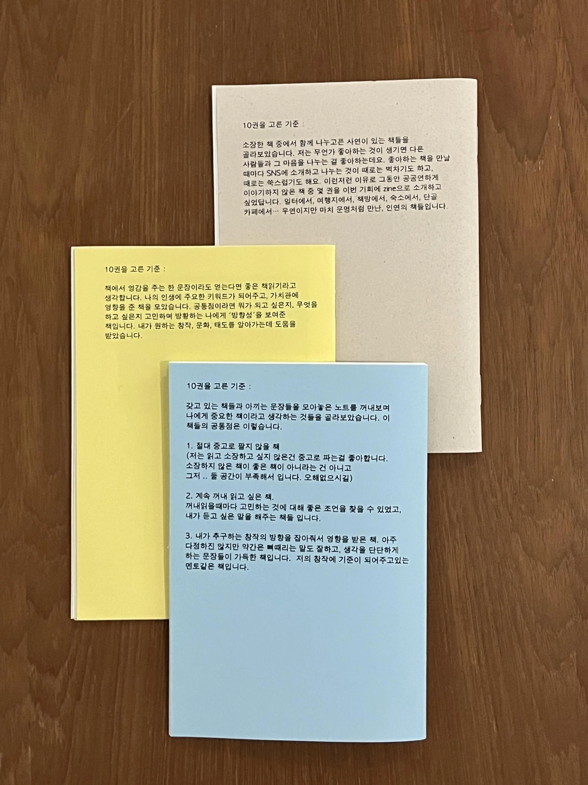
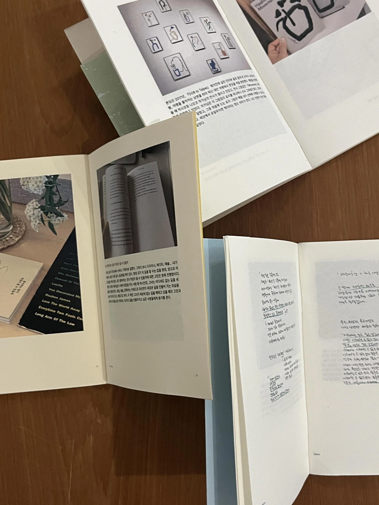

우연한 계기로 각자 좋아하는 책 10권씩 모아 zine을 만들어보자고 생각하며 시작되었습니다. 그날 모인 셋이 공통으로 좋아하는 것을 쭉 적어보다가 '감자'를 발견하였고, Potato Press라는 이름을 지었습니다. 진짜 출판사가 아닌 가상의 출판사이며, 〈내가 좋아하는 10권의 책〉을 시리즈로 여러 창작자들과 계속 이어 만들고 싶어서 멋진 이름을 붙여보았습니다. (감자를 좋아하신다면 함께 하실 수 있습니다.)
파카 : 창작의 방향을 잡아주고, 좋은 조언을 얻어 영향을 받은 책들
마운틴구구 : 우연이지만 마치 운명처럼 만난, 인연의 책들
루시 : 내가 추구하는 창작, 문화, 태도를 알아가는데 도움을 준 책들
직접 프린트하고 수작업으로 만든 zine입니다. 모든 것을 손으로 직접 만들어서 조금은 삐뚤게 접혀 있을 수 있습니다. 148 × 105 mm
It started with a casual idea: each of us picks 10 favorite books and we make a zine together. As we listed things we all had in common that day, we found "potato" — and so Potato Press was born. Not a real publisher, but an imaginary one. We named it something good because we want to keep making this series with different creators. (If you love potatoes, you're welcome to join.)
Paca: Books that helped set the direction of my creative practice and offered good advice
Mountain Gugu: Books that felt like fate — chance encounters that turned into something meaningful
Lucy: Books that helped me understand the kind of creativity, culture, and attitude I want to pursue
Printed and handmade — folded by hand, so things might be a little crooked. Please keep that in mind! 148 × 105 mm